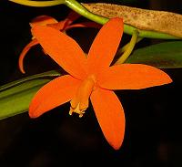

A hibrid fajták változatossága sinte megszámlálhatatlan. Néhány hibridnek nincs is neve csak száma. Persze vannak jellegzetes nemzetségek, amiket a tenyésztésnél felhasználnak.
|
Phalaenopsis
Ez a fajta az egyik legkedveltebb, hiszen akár 3-6 hónapon keresztül is virágzik. Nem nagyigényû, ezért a lakásokban is jól érzi magát. |
|
|
Cattleya
Dél-Amerikában honos fán élõ fajta. Nagy, illatos virága és fajtagazdasága miatt közkedvelt. |

|
|
Cymbidium
Ezzel a változattal találkozunk legtöbbször, hiszen vágott formában elõszeretettel vásárolják. |
|
|
Laelia
Braziliában honos fajta (980-1400 m). Földben gyökerezo fajta. |
 |